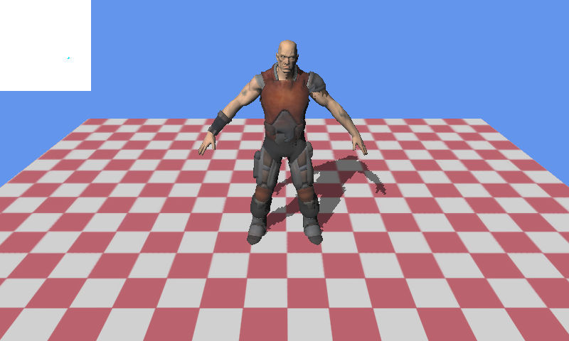

Shadow Mapping
Ported from Microsoft's XNA 4.0 Shadow Mapping sample.
Source for this sample on GitHub ↗

Play ▸Opens in a new tab. Move the camera to see how the shadow map follows its view.
About this sample
A directional light casts the character's shadow across a checkerboard floor. The sample first renders depth from the light into a floating-point shadow map, then uses that map when drawing the scene. Its projection follows the camera's visible frustum; the small square at the upper left previews the current map.
Controls
| Action | Keyboard | Gamepad |
|---|---|---|
| Turn the camera | Arrow keys | Right stick |
| Move the camera | W, A, S, D | Left stick |
| Rotate the character | Q and E | Left and right triggers |
| Reset the camera | R | Press right stick |
| Exit | Escape | Back |